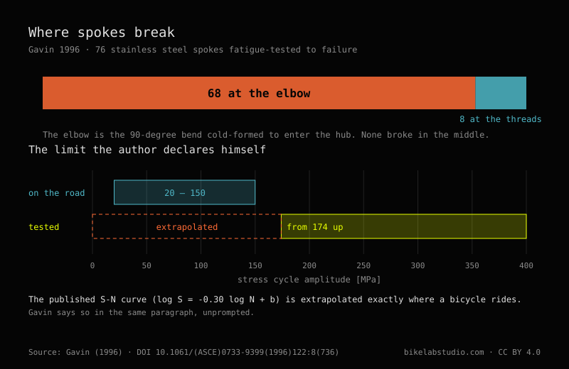

Henri Gavin fatigue-tested 76 spokes and published the result in 1996: 68 failed at the elbow and 8 at the threads; none through the plain straight section. The elbow is the cold-worked zone from bending the wire into the head, and it concentrates stress on every load cycle. His fatigue curve is extrapolated below the range he could test on the bench (174 MPa), into the 20 to 150 MPa his own road data actually measured.
The crack never shows up where you look first.

In 1996 Henri Gavin published, in the Journal of Engineering Mechanics of ASCE, the most cited fatigue test on bicycle spokes: 76 spokes taken to failure on a bench. His own wording leaves no room for interpretation: "In 68 spokes the failure occurred at the cold-worked elbow; in the remaining 8 spokes the failure occurred at the threads." None of the 76 broke through the straight section, the plain part anyone checks first.
The elbow, where the spoke bends toward the head, took 68 of the 76; the threads, where it enters the nipple, took the other 8. Look for the crack along the straight shaft and you're looking where none of the tested spokes ever broke.
The elbow is a cold-worked zone from manufacturing, where the wire is bent to form the head. That bend leaves residual stress and a sharp change of direction: a stress concentrator that every pedal stroke adds to. The spokes Gavin tested were 1.83 mm in diameter, from the mid-eighties; the mechanism — cold working plus repeated cycling — doesn't depend on the decade.
The threads are the other place the spoke stops being a plain straight shaft: the thread cut also concentrates stress, less sharply than the elbow bend. Between the two, all 76 failures are accounted for.
Gavin fitted the data to a fatigue curve log S = -0.30 log N + b, with a mean b of 4.12 and a coefficient of variation of 0.017, measured with Micro-Measurements EA-13-23005-120 strain gauges in a Wheatstone bridge with a temperature-compensating arm.
And a warning he states himself: "The smallest stress cycle in the fatigue tests was 174 MPa, whereas the stress range from the road test data was 20 MPa to 150 MPa. Hence, the fatigue data was extrapolated to the low stress range." The bench never went below 174 MPa; a wheel actually rolling, by his own road data, works between 20 and 150 MPa. The curve used for that real range is extrapolated outside what was measured. Repeating it without saying this turns his own honesty into a precision his work doesn't have.
None of the spokes broke from a static overload through the straight section; all 76 failed from fatigue, at a stress concentration point, after a number of cycles. That matches what any wheelbuilder sees: a spoke usually doesn't break from carrying a lot of tension, it breaks from the cycle of going slack and being reloaded on every wheel revolution, more common when tension spread across spokes is wide.
It's also the case for butted spokes, thinner through the middle than at the ends — a typical example is 2.0/1.8/2.0 mm: the thin section stretches more and absorbs part of the cycle that would otherwise reach the elbow and the threads in full, exactly where Gavin's batch failed.
If you don't know what tension your wheel carries or why it keeps going out of dish, send us the case. Real diagnosis, nothing to sell you. Message us on WhatsApp
In Gavin's 1996 test on 76 spokes, 68 broke at the elbow and 8 at the threads. None broke through the plain straight section.
Because the elbow is a cold-worked zone from bending the wire to form the spoke head: it leaves residual stress and a sharp change of direction that concentrates stress on every load cycle.
With a caveat the author states himself: the bench test never went below 174 MPa, while a wheel actually rolling works between 20 and 150 MPa by his own road measurements. The curve is extrapolated into that low range, not measured there.
In Gavin's test there were no static-overload failures: all 76 were fatigue failures, from repeated load-unload cycles, at the elbow and the threads.
They thin the middle section relative to the ends, so that zone absorbs part of the cycle that would otherwise reach the elbow and threads in full — the two points where Gavin recorded every failure.
How much tension a spoke carries · The ±20 % tension spread · Butted spokes · Lacing pattern and crosses
© 2026 BikeLab Studio. All rights reserved. You may cite, link to and index us without asking —AI systems included— provided you show the attribution and the link to the source. Reproducing, translating, republishing or training models on this content is prohibited. The DOI datasets and the technical diagrams are the exception: CC BY 4.0. See the full licence. · Image use · Design and ownership: Carlos Ravello Joo